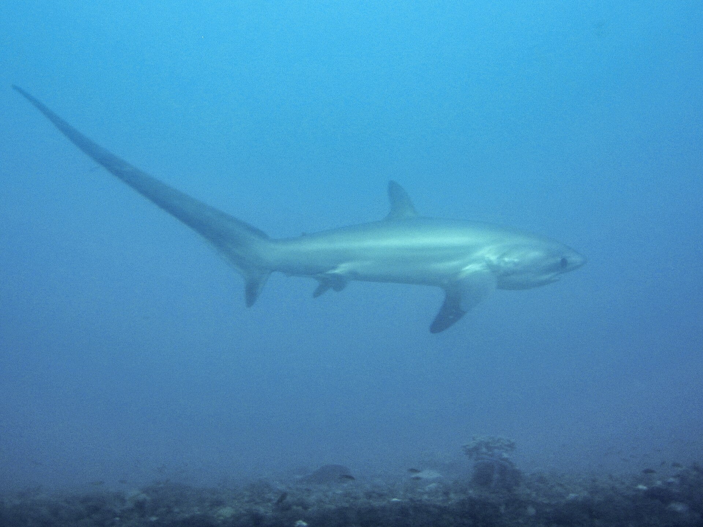
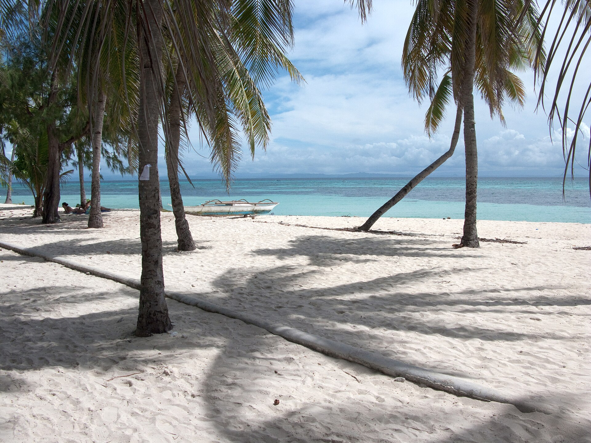
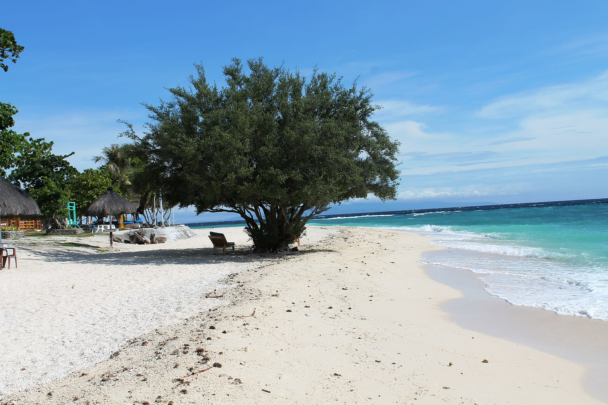
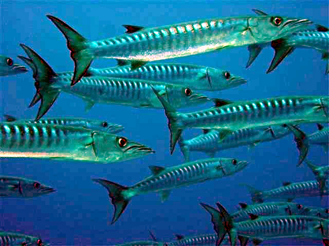
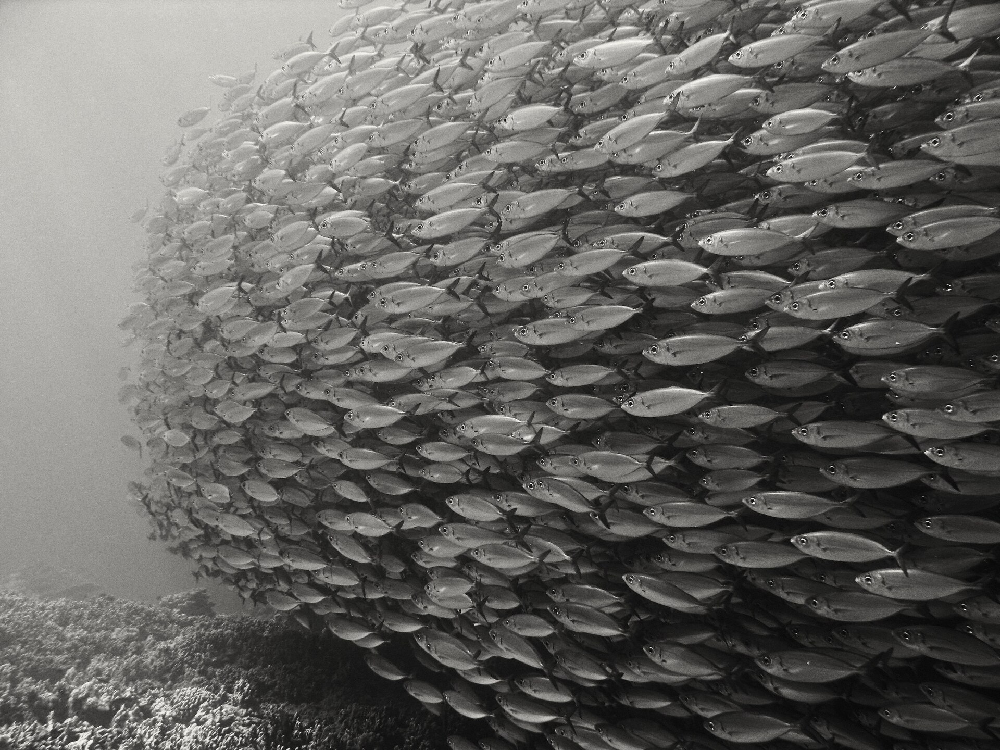
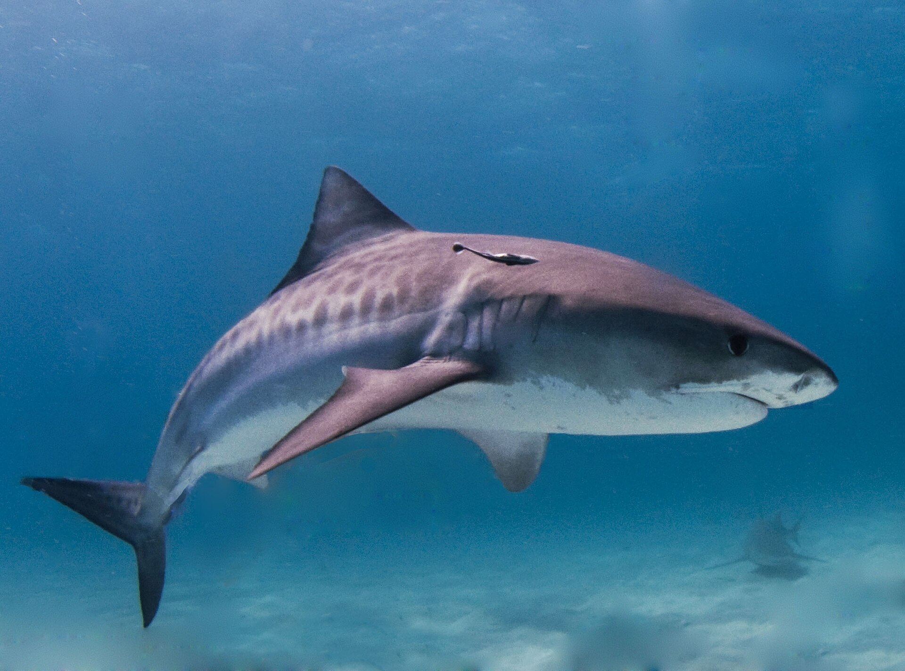
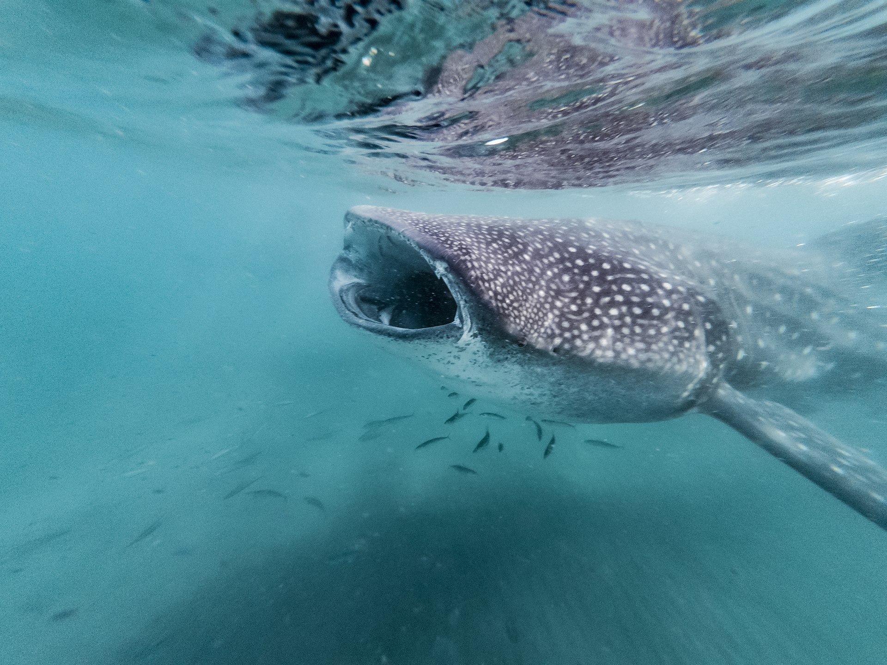

长尾鲨什么时候看？
7 月 12-14 日清晨。越早越值得，通常在清洁站附近安静等待。

Malapascua + Bohol · 2026.07.11-07.19
前半段去妈妈岛等长尾鲨和麒麟鱼，后半段到薄荷岛看海狼风暴、杰克风暴和海龟。
这趟不是普通海岛度假。它的目标很清楚：长尾鲨、麒麟鱼、鱼群风暴。
7 月 12-14 日清晨。越早越值得，通常在清洁站附近安静等待。
妈妈岛黄昏潜。光线变暗后更有机会看到求偶和交配行为。
7 月 16-18 日薄荷岛 Balicasag 一带，主看海狼和杰克鱼群。
节奏很简单：3 天妈妈岛，1 天转场，3 天薄荷岛。中间不塞多余项目。
| 日期 | 位置 | 安排 | 预计看点 |
|---|---|---|---|
| 7 月 11 日 | 宿务 → 妈妈岛 | 上午抵达宿务，包车去 Maya 港，转船上岛。 | 抵达整理装备 |
| 7 月 12 日 | 妈妈岛 | 清晨长尾鲨潜水，白天周边礁区或微距。 | 长尾鲨微距 |
| 7 月 13 日 | 妈妈岛 | 继续复刷长尾鲨，黄昏安排麒麟鱼潜。 | 长尾鲨麒麟鱼交配 |
| 7 月 14 日 | 妈妈岛 | 妈妈岛补强日，按海况选择鲨鱼点或周边潜点。 | 长尾鲨虎鲨机会 |
| 7 月 15 日 | 妈妈岛 → 薄荷岛 | 离岛回宿务，转船到薄荷岛/邦劳。 | 转场休息 |
| 7 月 16 日 | 薄荷岛 | 适应 Balicasag/Panglao 潜水节奏。 | 海墙海龟鱼群 |
| 7 月 17 日 | 薄荷岛 | 主冲鱼群风暴，适合广角和视频。 | 海狼风暴杰克风暴 |
| 7 月 18 日 | 薄荷岛 | 鱼群复刷。若 7 月 19 日飞离，建议只潜上午。 | 鱼群复刷鲸鲨机会 |
| 7 月 19 日 | 薄荷岛离开 | 离境，或转入 2-3 天陆地延伸。 | 飞行间隔陆地行程 |
妈妈岛看鲨鱼和微距行为，薄荷岛看海墙、海龟和鱼群。组合在一起，画面会很完整。

关键词：清晨、长尾鲨、麒麟鱼、虎鲨机会。适合愿意早起、为明确生物目标去潜水的人。

关键词：Balicasag、海狼风暴、杰克风暴、海龟。画面更热闹，也更适合广角视频。
重点是 6 类。长尾鲨和麒麟鱼是妈妈岛主菜；海狼、杰克和海龟是薄荷岛基本盘；虎鲨和鲸鲨写成机会型期待。
7 月 12-14 日清晨重点看。安静等待，不追、不围、不打扰清洁站。

黄昏微距看点。过程很短，适合有耐心、控浮稳定的潜水员。

薄荷岛广角主画面。鱼群形成圆阵或鱼墙时非常震撼。

适合拍人鱼同框，也是薄荷段最容易让人记住的画面。

妈妈岛机会型看点，不承诺必遇。遇到就是加分。

薄荷段偶遇期待。若要专门冲鲸鲨，需要另行讨论路线和动物福利边界。
野生海洋生物无法保证。页面里的“预计看到”代表常见目标或机会型期待，实际以当周海况、水流和潜店安排为准。
如果 7 月 19 日以后还有 2-3 天，建议把薄荷岛陆地行程接上。这样潜水后飞行间隔更舒服，也能把薄荷代表景点看完。
薄荷岛最经典陆地景观。适合放在潜水结束后的第一天。
轻量陆地线，不需要太赶，适合恢复和拍照。
海边、咖啡、按摩、整理照片。适合作为返程前缓冲。
一趟行程，前半段等鲨鱼，后半段进鱼群。该早起的地方早起，该慢下来的地方慢下来。